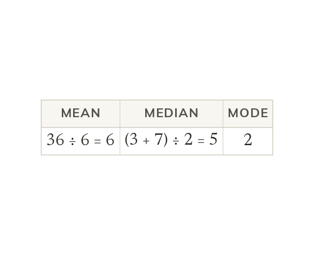

Three kinds of average
The mean shares the total equally. The median is the middle value, and the mode the most common. For 2, 2, 3, 7, 9 and 13, all three differ.
The mean shares the total equally, the median is the middle value, and the mode is the most common value. For 2, 2, 3, 7, 9 and 13 they give three different answers.